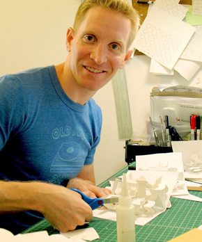
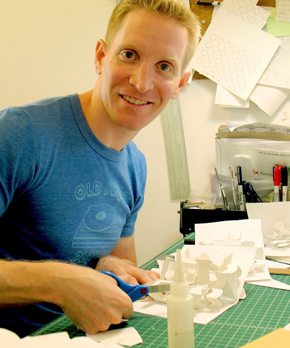

Ingeniería para sorprender
¿Qué es la Ingeniería en Papel?
Antes de comenzar a hablar de las técnicas de la ingeniería en papel, repasemos brevemente a quien se lo denomina ingeniero en papel.
Según David Carter y James Diaz (2009:1) “es una artista que crea pop-up utilizando el papel como medio principal”,
mientras que para Helen Heibert (2015:14) “es alguien que diseña libros desplegables o móviles”,pero agrega que también realiza
“tarjetas de felicitaciones,desplegables para publicidad… para CD, así como decorados de películas”.
Por ellos algunos utilizan la denominación de diseñador en papel.
La autoformación ha sido desde sus inicios una característica de los ingenieros en papel, su educación venía de otras ramas como la publicidad,
ilustración, la encuadernación, la arquitectura y la industria editorial. Con el devenir del tiempo, las nuevas generaciones provienen
de otras áreas como las escuelas de arte, así como del diseño, la decoración y de la industria gráfica.
Según Trebbi, el diseñador o ingeniero deben tener conocimientos sobre las características físicas del material papel, como sus resistencias
y raciones en el uso de la construcción. Al mismo tiempo necesitan comprender las técnicas de traslado, rotación, pliegue y
repliegue, para realizar los mecanismos de animación. En palabras del hacedor de libros móviles Andre Baron, citado en Trebbi
(2011), el ingeniero debe ser capaz de ver los croquis de un ilustrador y poder imaginar la mecánica para poder accionar y
darles movimiento a las imágenes.
Esta tarea se desarrolla en comunión con el ilustrador. Su trabajo no termina aquí, ya que luego de diseñar
los mecanismos deberá, junto con el impresor, poder amar los pliegos. De manera tal que a la hora de ser cortados no se generen
inconvenientes en el montaje. Ya que el armado de los libros pop-up, a pesar que ha transitado una larga historia (salvo algunos libros de
estructuras muy sencillas), se siguen ensamblando en forma totalmente artesanal.
 

Estrellas del Pop-up
Fue a principios de siglo XXI que los libros pop-up se reafirmaron en el mundo editorial, con el surgimiento de nuevos ingenieros,
diseñadores y artistas, como los estadounidenses
David Carter, Robert Sabuda, Matthew Reinhart; los franceses Philippe Huger,
Marion Bataille, Anouk Boisrobert y Louis Rigaud; o las españolas Ángels Navarro y Patricia Geis.
Estos creadores, de la mano de las editoriales, han sabido colocar a los libros móviles en un área mucho más visible entre los libros tradicionales.
El auge de las nuevas tecnologías de edición e impresión perfeccionó y amplió las técnicas del pop-up,
se generaron discursos que cautivaron nuevos públicos y mercados gracias a la llegada de Internet y las redes sociales.
Esto tampoco nos permite decir o garantizar que todos los trabajos son maravillosos, ya que “cada vez y más a menudo
la producción es tan espectacular como de mal gusto” (Trebbi, 2012).
Las nuevas tecnologías de edición e impresión perfeccionó y amplió las técnicas del pop-up,
se generaron discursos que cautivaron nuevos públicos y mercados gracias a la llegada de Internet y las redes sociales.
Esto tampoco nos permite decir o garantizar que todos los trabajos son maravillosos, ya que “cada vez y más a menudo
la producción es tan espectacular como de mal gusto” (Trebbi, 2012).
Auge de las nuevas tecnologías de edición e impresión perfeccionó y amplió las técnicas del pop-up,
se generaron discursos que cautivaron nuevos públicos y mercados gracias a la llegada de Internet y las redes sociales.
Esto tampoco nos permite decir o garantizar que todos los trabajos son maravillosos, ya que “cada vez y más a menudo
la producción es tan espectacular como de mal gusto” (Trebbi, 2012).